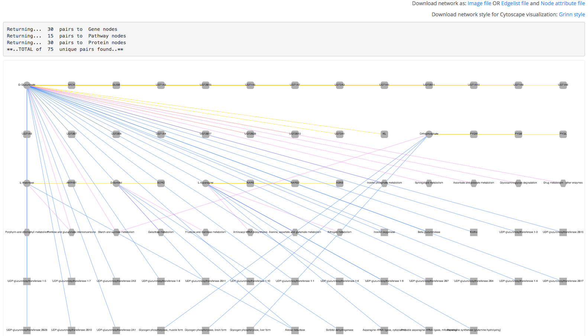

PAIR
PAIR generates an integrated network by connecting the input metabolites to proteins, genes and pathways.
1) Create an integrated network of 5 statistically significant metabolites (p-value < 0.05) resulting from comparing the metabolomic profiles of psoriatic arthritis and healthy controls. See the original paper from April et al. (2014). In this example, ChEBI ID is used as the input.
2) An interactive network is returned. The vertices are metabolites (ellipse), protein (rectangle), gene (roundrectangle) and pathway (hexagon). The edge color represents the type of links: PAIR_TO_Protein (blue), PAIR_TO_Gene (yellow) and PAIR_TO_Pathway (pink). Download the network as an image or tab-delimited files compatible with Cytoscape visualization software. The tab-delimited files contain the list of edges and node attributes. Grinn network style is provided as an xml file which can be used directly in Cytoscape. Once downloaded, the network style can be reused.
3) This figure is generated by Cytoscape. The network is mapped with statistical results from comparing the gene expression profiles of psoriatic arthritis and healthy controls. See the original paper from Rosenberg et al. (2014). The color-scale is based on the direction of gene expression changes: increase (red) and decrease (blue). The bigest roundrectangle is a statistically significant gene (p-value < 0.05), KL. The edge color represents the type of relationships: PAIR_TO_Protein (blue), PAIR_TO_Gene (yellow) and PAIR_TO_Pathway (pink). The label color of metabolites is based on the direction of changes: increase (red) and decrease (blue).
References
Metabolomics and transcriptomics data used in this example are taken from the following publication:
- April W, et al. Metabolomics in psoriatic disease: pilot study reveals metabolite differences in psoriasis and psoriatic arthritis. F1000Res. 2014;3:248.
- Rosenberg A, et al. Divergent gene activation in peripheral blood and tissues of patients with rheumatoid arthritis, psoriatic arthritis and psoriasis following infliximab therapy. PLoS One. 2014;9(10).